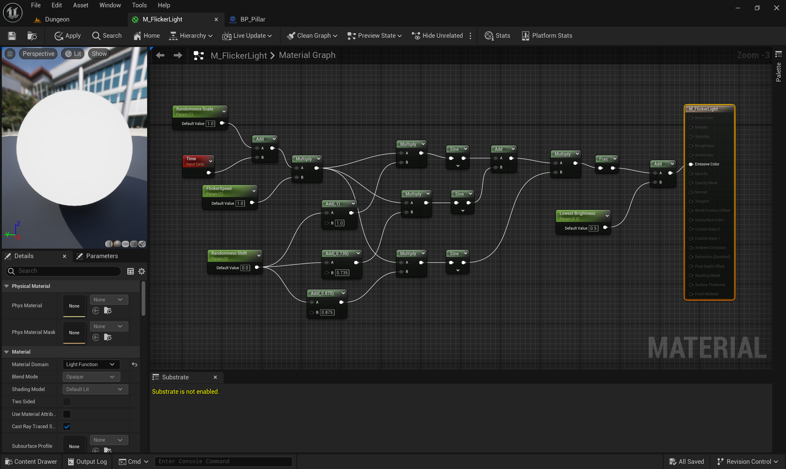
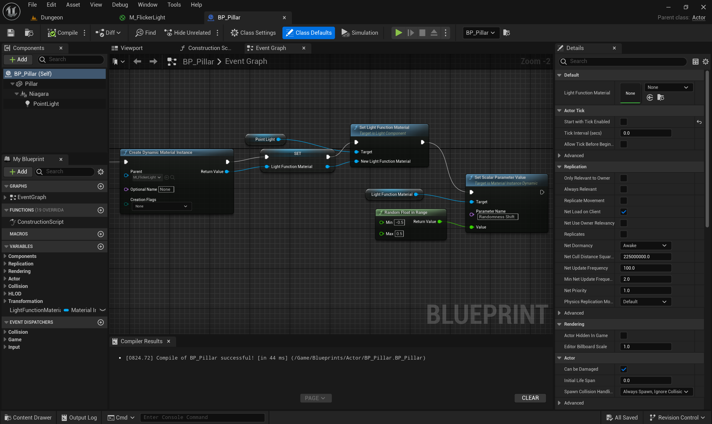
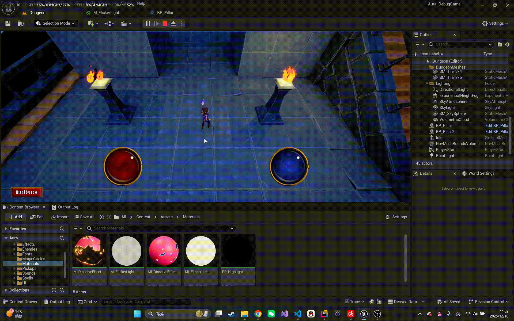

ue-light-flicker
UE5 实现灯光闪烁效果
一种naive的想法是在蓝图用Timeline不断改变灯光的intensity属性。但最近在网上看到了一个更优雅的实现方式，使用灯光材质函数（Light Material Function）来实现。
具体实现如下，定义一个材质（不是材质函数），在Material Domain选择Light Function：

你或许已经注意到了关键点，就是“Time”节点和“Sine”节点。具体数学原理如下： 1
2
3
4
5
6
7// 参数：Time（运行时间），RandomnessScale, FlickerSpeed, RandomnessShift, LowestBrightness
T = (Time + RandomnessScale) * FlickerSpeed; // 时间基准
S1 = sin( T * (RandomnessShift + 1.000) ); // 正弦波1
S2 = sin( T * (RandomnessShift + 0.735) ); // 正弦波2
S3 = sin( T * (RandomnessShift + 0.845) ); // 正弦波3
RawFlicker = (S1 + S2) * S3; // 合成波形
Flicker = frac(RawFlicker) + LowestBrightness; // 取小数部分并加上最低亮度
Tip：frac(x)函数表示取x的小数部分。 问了GPT，上面这种形式周期很长，可以在短时间内视作随机变化。
然后创建对应的材质实例，在蓝图中将该材质实例赋值给灯光的Light Function属性即可。

为了在不同的Actor实例上实现不同的闪烁效果，如上图调整RandomnessShift 参数即可。想调整闪烁速度则调整FlickerSpeed参数，想调整最低亮度则调整LowestBrightness参数。 至于 RandomnessScale参数，则是显示对时间进行shift，感觉和 RandomShift 一个效果，可以忽略。
